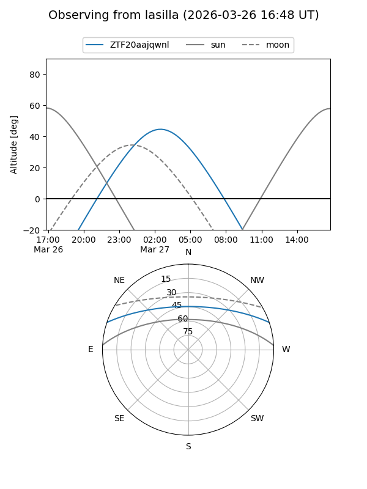
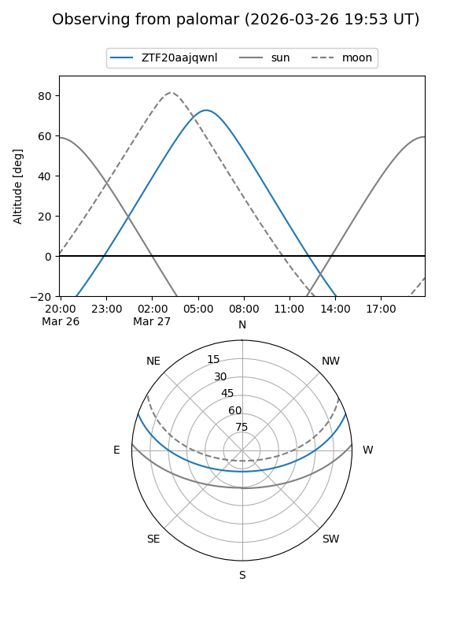

ZTF20aajqwnl
Target ZTF20aajqwnl at 2026-03-27 05:22
Aliases and brokers:
FINK: link
Lasair: link
ALeRCE: link
alt names
ZTF20aajqwnl (ztf,fink_ztf)
Coordinates:
equatorial (ra, dec) = 150.6563,+16.23593
equatorial (HMS+DMS) = 10:02:37.50,+16:14:09.34
galactic (l, b) = (219.6061,+49.50572)
Flags:
Photometry:
last ztfg=17.72
1 ztfg detections
Lightcurve
Visibility


Additional plots